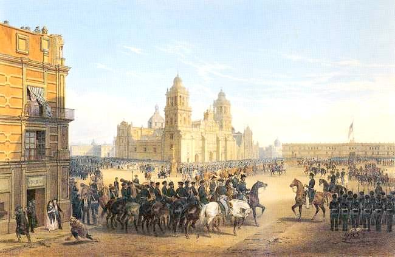
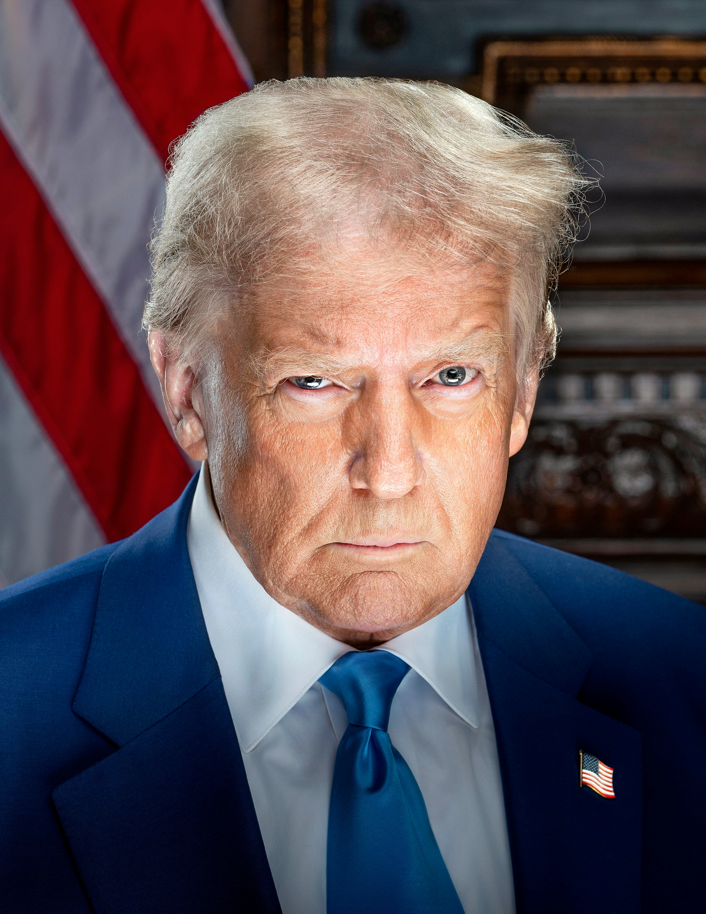

Electronic Music, American History & Computer Programming
American History
American Civil War (1861–1865)

The American Civil War was fought between the Northern states (the Union) and the Southern states (the Confederacy) primarily over slavery and states’ rights. Following the election of Abraham Lincoln in 1860, eleven Southern states seceded from the United States to form the Confederacy. The war became the deadliest conflict in American history and ended in 1865 with a Union victory, preserving the nation and leading to the abolition of slavery through the 13th Amendment, fundamentally reshaping the country’s political and social structure.
Mexican–American War (1846–1848)

The Mexican–American War was fought between the United States and Mexico from 1846 to 1848, largely over a border dispute after the U.S. annexed Texas. Under President James K. Polk, the U.S. pursued territorial expansion based on the belief in Manifest Destiny. After American forces captured Mexico City, the war ended with the Treaty of Guadalupe Hidalgo in 1848, in which Mexico ceded a vast amount of land—including present-day California, Arizona, New Mexico, Nevada, Utah, and parts of Colorado and Wyoming—to the United States, significantly expanding U.S. territory.
Current Trump Presidency (2025–present)

Donald Trump is serving his second term after winning the 2024 election and taking office again on January 20, 2025. His administration emphasizes a strong “America First” agenda with aggressive immigration enforcement, economic nationalism, deregulation, and judicial appointments. Domestically, he has pursued expanded immigration crackdowns and, at times, deployed federal forces to cities to address crime and protests, sparking controversy over the use of military power within the U.S. internationally, his presidency has entered a significant foreign policy crisis: large-scale military action against Iran, with ongoing regional instability and American troop casualties drawing sharp domestic debate and criticism. His approval ratings have dipped compared to earlier in his term, and there’s intense political polarization and protest activity across the country. Trump has also faced speculation and debate over the possibility—or limits—of his political future after his second term, even as the U.S. Constitution bars a third elected term.
Back to Home